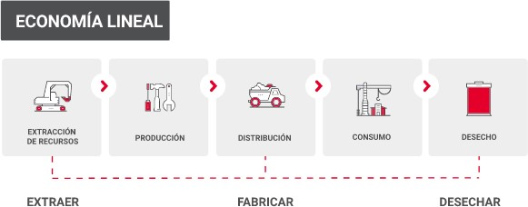
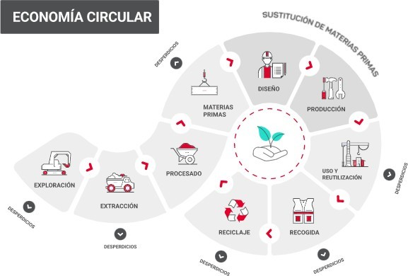
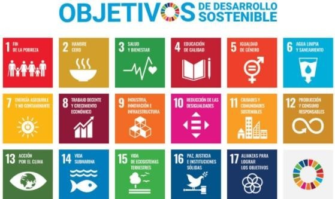

Si producimos para incentivar el consumo constante, sin una preocupación seria y responsable por los efectos ecológicos que sufre la naturaleza. A esto se le llama economía lineal.

Si no desechamos cómo en el proceso final de la economía lineal, sino que reciclamos o desmontado y sus piezas se utilizarán posteriormente para la producción de otros productos. A este modelo se le denomina economía circular.

| La economía circular es mejor que la lineal porque se aprovechan los recursos y se daña menos al medio ambiente. |
Ya sabemos que la economía circular es mejor que la economía lineal, pero la transición de una a otra no es sencilla. Por ello, los gobiernos de los países miembros de la Organización de Naciones Unidas (ONU) han establecido unos objetivos globales de "desarrollo sostenible" para erradicar la pobreza, proteger el planeta y asegurar la prosperidad. Cada objetivo tiene metas específicas que deben alcanzarse en los próximos 15 años.
A estos objetivos se les conoce como Objetivos de Desarrollo Sostenible (ODS).

En España, para cumplir con los ODS se ha creado la Estrategia de Transición Justa. Con ella se pretende favorecer la creación de empleo en aquellos lugares donde la protección del medio ambiente ha obligado a algunas empresas a no poder seguir con su actividad.
Para ello es necesario cambiar el modelo económico y de desarrollo y hacer frente al cambio climático. Es el momento de generar nuevas formas de producir y de consumir que no contaminen y sean sostenibles.